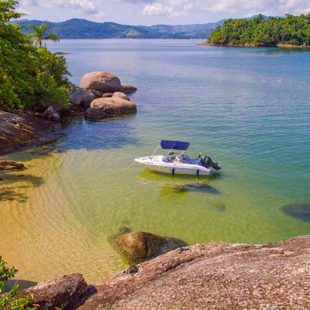

Palombeta Speedboat
Destinations
Your trip at the bay of Paraty will include stops at several beaches and islands for swimming and sightseeing. The stops will be suggested by our experienced skipper according to crowds and weather conditions. Some of our favorite stops include:
Red beach: long beach with white sand and clean waters is one of the most populars in Paraty. A few restaurants at this beach are popular with visitors.
Saco do Mamanguá: the only fiord of the brazilian coast, the sea goes inside a 8 km long area, surrounded by steep mountains covered by the Atlantic Forest and little fishing villages of the natives or caiçaras.
Ilha Comprida: the favorite stop for snorkeling and diving, Comprida (long) Island always delights visitors with several species of fish and other sea creatures. If you bring some bread the fish will like you even more!
Cajaíba: the last port before the big open ocean Cajaíba has over 6 idilic beaches, some with small traditional fishing villages like Pouso da Cajaíba, others like Praia Grande with a waterfall with easy access from the beach.
Saco da Velha: as a calm sea that varies between green and blue depending on sea conditions. At the end of the beach go into the cave and see if you can come out of the other side!
Our itinerary can include these places and many other depending on the trip duration and sea/weather conditions.
Get in contact now and schedule your trip!
